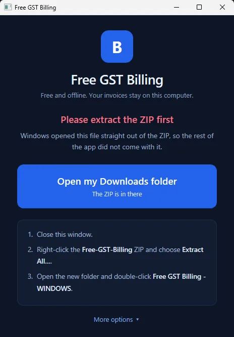
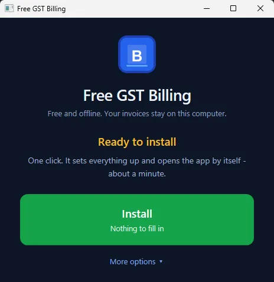
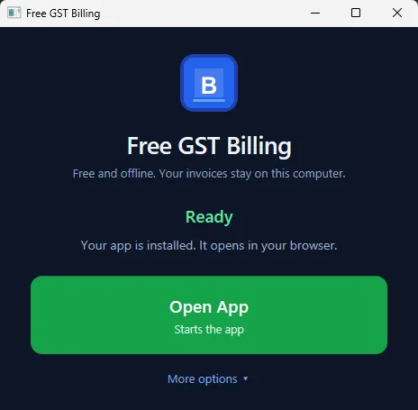

Install on Windows, step by step
Download the Setup program and double-click it: it installs like any other Windows program, in about 2 minutes, with no administrator password. Every step below says what to press and what you will see.
Windows (most PCs and laptops): Install on Windows. Mac (Apple logo top left): Install on a Mac. Linux or a NAS: Install on Linux or a NAS. Already installed? Updating. Wondering whether it is safe? Is it safe? Security and privacy.
#Before you start
- Windows 10 or Windows 11. To check: press Windows + R, type
winver, press Enter. - Internet for the install only (it downloads about 25 MB). After that the app works offline.
- About 600 MB of free space.
#Install with the Setup program (recommended)
Installs like any other Windows program: an icon in the Start menu and on the Desktop, the app in a window of its own (closing it keeps it running near the clock), updates from inside the app, and removal in Windows Settings. No administrator password.
- Install directly from your browser (Fastest PWA Install) or Setup programOpen Bharat GST Free Billing and click Install Offline App in Settings → App & Offline Install (or run
Bharat-GST-Billing-Windows-Setup.exeif using the desktop installer). - Open itDouble-click
Bharat-GST-Billing-Windows-Setup.exein your Downloads folder. - If Windows says "Windows protected your PC"That blue box is SmartScreen. It appears because the Setup is new and not yet signed with a paid certificate, not because anything is wrong with it. Click More info, then Run anyway.
- Answer "Your books"Your books are your invoices, clients, products and settings. Setup asks where they should be kept:
- First time on this computer: leave Start new books in C:\Users\<your name>\Bharat GST Free Billing ticked.
- You already use Bharat GST Free Billing (the ZIP or the one-line install): Setup finds it and shows how many invoices it has. If it finds more than one copy, it lists them all (the one you changed last first, with its invoices and date) and you pick the one you use. Keep using my books where they are uses them in their folder (do not delete that folder afterwards). Copy my books to C:\Users\<your name>\Bharat GST Free Billing makes a copy, checks every file, and leaves your old folder exactly as it was, as a backup. Either way nothing in your old folder is changed or deleted.
- Your books are somewhere else (another drive, a copied folder): choose browse and pick the folder that has the
datafolder in it.
- Choose the iconsA Desktop icon is ticked. Tick Open Bharat GST Free Billing when Windows starts if you want it to open by itself.
- Click Install, then FinishThe app opens in its own window. The last page shows where your books are and where Setup wrote what it did (
Bharat GST Free Billing - install log.txt).
Your old icons are not deleted: they are moved into the Old shortcuts (backup) folder next to that log, so two icons never start two copies of the app.
Updates: when a new version is out, the app shows Update to vX in the menu (and a Windows notification, if you allow it in the update window). Click it, then Update Now: a window in the app shows the progress while the new Setup downloads and installs by itself, and the app reloads in about a minute. Your books are not touched. You never need to reinstall. Running a newer Setup by hand over the installed app updates it too: its window then says Updating Bharat GST Free Billing and Update instead of Install.
Removing it: Windows Settings → Apps → Bharat GST Free Billing → Uninstall. It asks Also delete your books?: the answer is No unless you click Yes, and books in your earlier copy's folder are never deleted by it.
#Other way: install with one line
No download to open and no "Windows protected your PC" box: paste one line instead. It sets up the same app with the ZIP's launcher and opens it in Edge's app window.
- Copy this lineClick the Copy button at the right end of the line below. (Or select all of it with the mouse and press Ctrl + C.)
powershell -ExecutionPolicy Bypass -c "[Net.ServicePointManager]::SecurityProtocol='Tls12'; irm https://raw.githubusercontent.com/abhishekagrahari307-max/Bharat-ai-Voice/main/install.ps1 | iex" - Press Windows + RHold the Windows key (the one with the Windows logo) and press R. A small Run box opens at the bottom left.
- Paste and press EnterClick in the box, press Ctrl + V, then press Enter.
- Watch it workA blue or black window shows four steps, each ending in OK:
It may also fetch Node.js, the engine the app runs on (about 30 MB, kept inside the app folder).[1/4] Checking this computer ... OK [2/4] Downloading (25 MB) ... [3/4] Installing ... OK [4/4] Adding icons ... OK - Answer one questionIt asks Open Bharat GST Free Billing by itself when this computer starts? Type
Yand press Enter for yes, or just press Enter for no. - The app opens in its own windowThe window says Done! Opening Bharat GST Free Billing... and the app appears, with no browser tabs or address bar. A short welcome asks for your business details; see The first-run setup. The install window closes by itself.
Every day after that: click the Bharat GST Free Billing icon on your Desktop or in the Start menu.
To update or repair it: do the same three steps again. It finds your install, backs up your data to Documents\BharatGST Backups, and replaces only the app's own files. Your invoices, clients and settings stay exactly as they are.
The line under it says what to do (no internet, the disk is full, the folder cannot be written to). Do that, then paste the same line again; it carries on where it stopped. Nothing in your data is changed by a failed install.
The app is installed to %LOCALAPPDATA%\Programs\Bharat GST Free Billing. If you installed it from the ZIP before, the line finds that copy (through its Desktop shortcut) and updates it where it is. Your data is in the _system\data folder inside it.
#Other way: download the ZIP
For offices that copy the app from a USB stick, or where the Setup and the line above are blocked. It takes a few more clicks and Windows shows a warning the first time.
#Step 1: Download
- Click this buttonDownload Bharat GST Free Billing
- Wait for the download to finishYour browser shows it at the top right (Chrome and Edge) or bottom left. The file is called
Bharat-GST-Billing.zip. - Open your Downloads folderClick the folder icon next to the download, or open File Explorer (the yellow folder on the taskbar) and click Downloads on the left.
The green Code button on GitHub gives you the source code, not the app. It will not install.
#Step 2: Unzip (extract) it
A ZIP is a packed folder. Windows can open it, but the app cannot run from inside it, so it has to be unpacked first.
- Right-click the ZIPRight-click
Bharat-GST-Billing.zipand choose Extract All…. (On Windows 11 it may be under Show more options.) - Choose whereClick Browse… and pick Documents, or a drive like
D:\. Not Downloads: things there get deleted when people tidy up. Do not chooseC:\Program Files. - Click ExtractA new folder called Bharat-GST-Billing opens. Inside you see Bharat GST Free Billing - WINDOWS, READ ME FIRST, and launchers for Mac and Linux.
If you double-click the launcher while still looking inside the ZIP, it says Please extract the ZIP first. Close it and do this step.

#Step 3: Open the launcher and click Install
- Double-click "Bharat GST Free Billing - WINDOWS"In the Bharat-GST-Billing folder.
- If Windows warns youSee "Windows protected your PC" just below: click More info, then Run anyway. If it asks Do you want to run this file?, click Run or Open.
- Click InstallA small window opens with one big button. Click Install. There is nothing to fill in.
- Leave the black window aloneA black window appears and does the work: it may get Node.js (the engine the app runs on, about 30 MB, kept inside the app folder). This takes 1 to 3 minutes. Don't close it; it closes by itself.
- The app opens by itselfin its own window, at
http://localhost:47371. A Bharat GST Free Billing icon is now on your Desktop and in the Start menu. A short welcome asks for your business details. See The first-run setup.


It says what is wrong and what to do (no internet, disk full, folder in the wrong place, antivirus). Do that, then click Install again; it carries on where it stopped. The full list is in The install stopped with an error.
#"Windows protected your PC"
This blue box appears the first time for any program that is not signed with a paid certificate (a few hundred dollars a year, which would make a free app not free). It does not mean anything is wrong. More in Is the install safe?
- Click the small link More info.
- Click the button Run anyway.
If the file will not open at all: right-click Bharat GST Free Billing - WINDOWS, choose Properties, tick Unblock at the bottom, click OK, and double-click it again.
If your antivirus deletes a file during the install, add the Bharat-GST-Billing folder to its exclusions (often under Exclusions or Allowed apps) and click Install again.
#Every day after that
- Double-click the "Bharat GST Free Billing" icon on your DesktopThe install put this icon (the blue B) there and in the Start menu. It starts the app and opens it in its own window. There is nothing else to click.
Update, restart and stop the app from Settings → App & updates, and back up or restore it from Settings → Data & Backups. Restarting the computer also stops it. The launcher, Bharat GST Free Billing - WINDOWS in the Bharat-GST-Billing folder, stays there for updates and repairs.
Your data is in the _system\data folder inside Bharat-GST-Billing; see Backups.
Use only this icon. If you also have a Bharat GST Free Billing app icon made by Chrome or Edge, remove it (right-click it, then Uninstall): it opens a window but cannot start the app.
#What the installer does
- Checks your PC: Windows 10 or 11, enough free space, a folder it can write to, and the internet.
- Sets up Node.js inside the app folder if the PC does not have a recent one. It is downloaded once from nodejs.org into
_system\node. Nothing is installed into Windows and no administrator password is needed. If that download fails, it asks before using Windows' own installer (winget), and otherwise opens the download page. - Adds a Bharat GST Free Billing shortcut to your Desktop and Start menu.
- Opens the app in your browser.
The app's parts come inside the ZIP, so nothing else is downloaded.
#For IT people
The one line can also be pasted into an open PowerShell window. To install into another folder, set it first: $env:BHARATGST_DIR = 'D:\Apps\Bharat GST Free Billing'. If that folder already has the app, it is updated in place.
#Removing the app
Back up your data first if you may want it again. See Export everything to one file.
Installed with the Setup program (.exe)? Use Windows Settings → Apps → Bharat GST Free Billing → Uninstall. See the Setup program.
The easy way: in the app, open Settings → App & updates and use Remove…. Tick what else to delete (your data, PDFs, backups) and click Remove the app. See Remove the App. Or, with the app closed, double-click Bharat GST Free Billing - WINDOWS in the app folder, click More options, then Remove the app...: the same tick boxes, then Remove the app.
Or with one line: press Windows + R, paste this line and press Enter:
powershell -ExecutionPolicy Bypass -c "[Net.ServicePointManager]::SecurityProtocol='Tls12'; & ([scriptblock]::Create((irm https://raw.githubusercontent.com/abhishekagrahari307-max/Bharat-ai-Voice/main/install.ps1))) -Uninstall"It stops the app and removes it and its icons. Your invoices, clients and settings are kept unless you type DELETE when it asks (and even then a last copy goes to Documents\BharatGST Backups).
By hand: in the launcher, More options → Stop the app, then delete the app folder and the Bharat GST Free Billing shortcuts on the Desktop and in the Start menu. Nothing is installed into Windows itself.